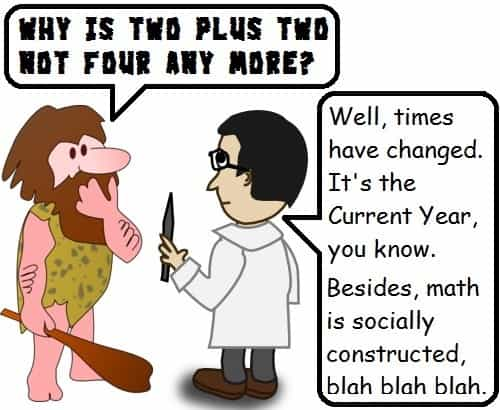

< < < Back
Does The Future Belong To The Left? – Return Of Kings
Likely you’ve heard leftists describing themselves as being the ideological torchbearers of the future. By extension, anyone resisting them (or even skeptical) is portrayed as being out of touch with the times, trying to stop the inevitable, or attempting to derail the natural evolution of society.
This sentiment is often given in catchphrases such as these:
- “You can’t turn back the clock.”
- “You’re on the wrong side of history.”
- “So I bet you want to go back to the times when [something bad] was happening.”
- “Change is inevitable.”
- “You can’t stop progress.”
- “We’re the forward-thinking ones.”
- “You’re a reactionary.”
- “Don’t you realize it’s [the Current Year]?”
- “You’re a Neanderthal.”
Actually, even the term “progressive” is a subtle framing tactic; it’s an implied assumption that their policies really do represent progress—which literally means “moving forward.” Another reason the term is used is because liberalism has acquired a negative association by some. Since they mean the same thing (assuming the modern variety of liberalism, heavily influenced by cultural Marxism since the 1960s), giving it another name is like putting lipstick on a pig.
Logic time

Being a Neanderthal doesn’t mean you’re always wrong.
All the above catchphrases depend on a certain implicit assumption. If you don’t call them out for this hidden premise, then their frame wins the argument. The implicit assumption they want you to believe is that politics only moves in one direction: leftward, of course. These catchphrases are often delivered with a triumphant smirk, signaling that you’ve lost. Whoa, not so fast, there!
I wrote “catchphrase” rather than “argument”, because none of the above actually are refutations based on facts or logic, no matter what it is you said. These are really thought-terminating clichés shorthand for an “argument from novelty”, which is a rhetorical fallacy. The proposition “newer is always right” is just as incorrect as saying “newer is never right”.
Let’s take something pretty uncontroversial: 2+2=4. If you say this today, it’s true. If someone said 2+2=4 in 1956, it was also true then. If an actual Neanderthal said that, it was still true 40,000 years ago. We should evaluate the truth of something regardless of who said it and when. Obviously this principle applies to things other than math as well.
What left and right mean (sort of)
The terms left and right originate from the seating in the Legislative Assembly of revolutionary France. Those who sat on the left favored change, and those on the right favored tradition. This is where the confusion sets in. Changes do happen, but it’s not always in the same ideological direction, no matter how much some might want you to believe that their views will inevitably prevail.
Unfortunately, the left/right designation is a bit imprecise for several reasons. For one example, ideology isn’t completely binary, and there’s no place for anything off the map. Also “change” versus “tradition” isn’t always a good predictor of whether a specific policy will be “left” or “right”, at least not the way we usually consider these policies. (For example, by the strict definition, gun control would be a “right wing” policy in a country that already has it.) Still, we’re sort of stuck with the left/right yardstick, imprecise though it is.
Note that traditions aren’t always the best way to do things, or remain useful forever, but they do get to be traditions because they work. Therefore, throwing them out the window without careful consideration is unwise. Still, leftists often have an odd notion that they’re smarter than all the generations who went before them.
By the textbook left/right standard, the most right wing government possible would be absolutist monarchy, like the proverbial Attila the Hun, or really any of the kings back then. That in turn evolved from tribal chieftains; Rousseau’s idea of early mankind in an anarchical state of nature is wrong, as anyone with a passing familiarity with tribal societies is aware.
The furthest left leader thus far has been Pol Pot, who made Chairman Mao seem pretty moderate by comparison. Pol Pot’s Khmer Rouge regime made sweeping changes to bring about an agrarian-based society. That involved eliminating the bourgeoisie in a very literal sense; people were put to death for owning glasses, because this meant they knew how to read. A third of Cambodia’s population was wiped out, which is not exactly the best track record for statecraft.
According to the “all politics moves leftward” meme, things will get a lot more leftist in the future, and continue on that trajectory. So the most left wing government possible would be… who the hell knows? If it’s really true that politics always moves leftward—carried adrift like a rudderless ship—then one day an administration similar to the Khmer Rouge will one day be the “new normal”. That eventually will be surpassed by something even more radical and screwed up, whatever that might be. Where does it end?
Is change always good?

Not all changes are improvements. There’s wisdom in knowing when to leave well enough alone.
“Change” is a favorite leftist buzzword that’s warm and squishy, like used diapers. However, change is not a direction, just as hope is not a strategy. It’s true that societies do change over time and circumstances. For example, communal ownership of property does work in some small, very tightly-knit tribes and religious societies. However, every attempt to implement that in an entire country has led to disaster.
Also, monarchy really did make sense back when the peasantry was mostly illiterate and only the upper classes were educated. That’s not so compelling now that the public can read and has at least a rudimentary grasp of civics and economics. For this reason, I suspect that the dumbing down of the educational system might be an effort to make the public susceptible to demagoguery and even dictatorship, or at least unaware and compliant.
Basic human nature doesn’t change; any ideology disregarding this fact—or disregarding elementary biology (such as feminism)—is doomed to failure. Also, what works for one culture might not necessarily work so well for another. That’s one big reason why packing many cultures that don’t have much in common inside the same country leads to problems.
What is progress, and who decides?

Here we come to an important question: what exactly is “progress” and who gets to decide? If you ask a leftist that, you’ll probably get a “deer in the headlights” look. I do have an answer to that one. The System—leftists who have wealth, power, and media access—form a center of gravity within a loose coalition and call the shots. The Hive—all the little guys implementing their policies—follows along.
Still, does being a virtue-signaling Silicon Valley billionaire, or knowing how to sing or act, or running a Wall Street finance operation, or even being a big-name political hack make any of those people particularly wise or fit to lead? Actually, the world that Social Justice Warriors think they’re struggling to bring about is very different from what it’s being socially engineered to become.
The changes that the “progressives” do say they want may well lead to a future dystopian society characterized by vast extremes of wealth, a surveillance state with no personal privacy or self-government, and the loss of genetic and cultural diversity by throwing all of humanity in a global biological stir-fry. This is what will happen if the globalists running the show get the kind of world they want.
The plans are well on the way. The middle class suffered greatly from economic catastrophe while Wall Street bounced back and the rich are richer than ever. The surveillance state is very much in place (with microchipping perhaps on the horizon), the government is increasingly neglectful and hostile to the public, censorship is becoming more sophisticated, and managed democracy is the norm. The Western world has been targeted for destruction, and all other societies eventually will be homogenized to death later, which will be the end of diversity. What kind of “progress” is all that?
In any case, it’s preposterous to say that every single thing the leftist collective hive-mind agrees on is something that advances society in a positive direction. For one matter, several leftist policies aren’t really about equality. Hiring quotas, set-asides, and other rent-seeking measures benefit one set of people but disadvantage everyone else. The usual rejoinder is that this is to correct some wrong that might have happened decades (or centuries) ago, which few (if any) of the individuals now being punished personally benefited from in the first place. All this may be “progress” for the favored groups, but certainly aren’t for everyone else.
Another problem is when leftist policies are wasteful, do more harm than good, or have an ulterior motive. For example, welfare sounds humane in principle, but the unintended consequence was intergenerational poverty, and that in turn caused crime rates to soar. (Hint: if you subsidize something, you get more of it.) Further, LBJ’s intentions were far from pure, and welfare even has been used as a political battering ram. The point is, taking one step forward and two steps back certainly isn’t progress.
The final take
Changes do happen in society, which then filters into politics. If the changes don’t work, then they should be abandoned. If they do work, then they should be retained, in which case they’ll eventually become time-honored traditions. There’s no reason we can’t question proposed changes, or must adopt them willy-nilly.
The ideological scene is not unidirectional; it’s a back-and-forth motion, usually moving slowly. We can’t re-create the past, but there’s no reason why we can’t learn from the acquired facts of history and implement what has been proven to work. The second half of the 20th Century was mostly characterized by liberalism, something carrying forward into today, but there’s no reason why this must continue indefinitely.
Read more: 13 Common SJW “Arguments” And How to Dismantle Them